AUSO：从技能内化到按行为选择性调用的统一优化
- 论文：AUSO: Action-Level Unified Skill Optimization from Internalization to Utilization
- 作者：Huizu Lin、Chengkai Huang、Tianqi Gao、Tao Huang、Daijiao Liu、Tongxin Li、Xiaoyan Sun、Lina Yao
- 第一作者主要机构：中国科学技术大学；合作机构包括新南威尔士大学、中国科学院大学、西交利物浦大学
- 首次公开：2026-08-21
- 代码：JordanSancholhz/Action-Skill（已核验公开可访问；README 给出环境安装、数据处理、训练与评测入口）
- 方向：Agentic RL、技能学习、行为级信用分配、GRPO、OOD 泛化
1. 背景和问题
大模型 Agent 面对的不是一次性生成，而是“观察—推理—行动—再观察”的长链路决策。它可能需要搜索网页、调用工具、在家庭环境中移动物体，或多轮检索后给出严格粒度的答案。外部技能库为这类 Agent 提供可复用的程序性知识：例如环境规则、工具使用策略、任务步骤和领域启发。问题在于，技能在策略成熟度不同的阶段并不该扮演同一种角色。训练早期，策略缺少基本能力，技能更像老师；能力形成后，策略应靠环境结果自行巩固；到了后期，技能只应在确实能改善当前决策时介入，而不是每一步都强行注入。
已有路线大致分为三类。Voyager、SkillRL、Skill1 等方法把技能保留在模型外，依靠检索或更新技能库支持执行，优点是模块化、可解释、可组合，代价是上下文开销、检索噪声和“何时该用”的额外判断。SKILL0、LatentSkill 一类方法将技能吸收到参数或潜在空间，可减少推理时提示成本，却可能牺牲显式控制与任务适配。Skill0.5 尝试折中：把可迁移技能内化，同时保留任务特定技能调用；但它依据滑动窗口里的任务级成功率，把样本路由到困难、中等、容易三个区间，再为不同区间配置不同目标。
现有方法要么把技能留在模型外部，要么将其完全内化，或依赖噪声较大的任务级成功率在内化与调用目标之间路由；这会割裂训练流程，并对同一轨迹内所有动作赋予一样的重要性，即使技能指导可能帮助某些决策、却干扰另一些决策。
任务级路由的第一个缺口是边界模糊。每个任务若只采样 8 条轨迹，经验成功率的最小步长就是 1/8；两个行为难度近似的样本可能仅差一条成功轨迹，却被阈值分到不同目标中。第二个缺口是信用粒度过粗：环境通常只在整条轨迹结束后给出成功或得分，但一次成功轨迹中可能既有关键技能驱动动作，也有几乎不受技能影响的普通动作；失败轨迹中也可能存在局部正确动作。将同一个轨迹标签均匀施加到所有动作，会掩盖技能在哪一步真正改变了策略分布。
更深的矛盾是，“技能影响大”与“技能影响好”并不等价。某条规则可能让下一步分布发生剧烈变化，但把 Agent 带向错误工具、冗余搜索或过早终止。因此，一个行为级方法至少需要两条信息：局部信号回答技能在哪里改变决策，全局结果信号回答这种改变应被奖励还是抑制。两者必须同时存在，否则系统会把“强干预”错当成“高价值”。AUSO 的 JSD 与 GRPO 优势正好分担这两个角色。
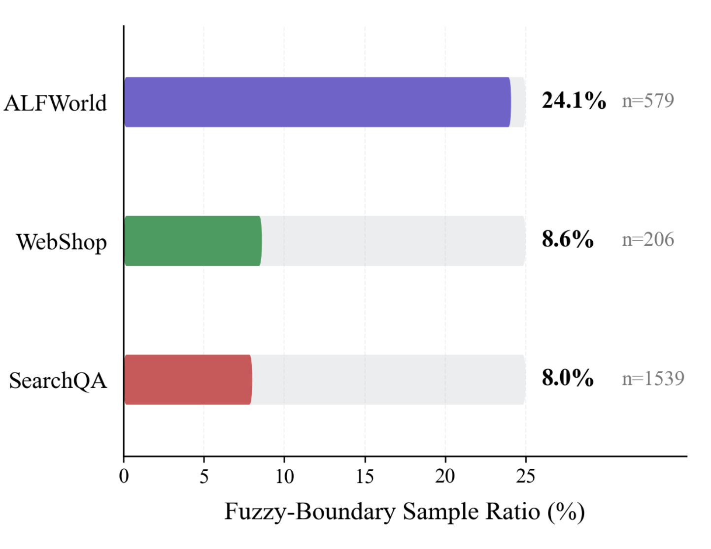
Figure 1 把“阈值模糊”从概念变成了可核对的规模：ALFWorld 中有 24.1% 的样本处在中等/容易边界附近，WebShop 与 SearchQA 分别为 8.6% 和 8.0%。作者把“附近”定义为跨越阈值但成功率只差一个 rollout 单位，因此这些样本接受不同优化处理未必反映真实难度差异。该统计没有证明旧方法一定错误，却说明硬阈值不是罕见边缘事件，尤其在 ALFWorld 上可能影响接近四分之一的样本。
AUSO 的核心研究问题因此可以表述为：能否保留外部技能在早期提供知识、在后期提供任务特定帮助的价值，同时让同一条强化学习主干依据每个动作的技能敏感度分配更新强度？论文选用 Jensen–Shannon divergence（JSD）比较“带技能”和“不带技能”上下文下的动作分布，并将其放进三个连续阶段。需要提前强调的是，JSD 只表示技能让决策改变了多少，不表示这种改变必然有益；真正的方向仍由环境奖励和轨迹优势决定。这一边界贯穿方法与实验，也是判断该工作是否过度解释的关键。
2. 方法
2.1 早期：教师引导的通用技能内化
整体流程按论文原始顺序分为通用技能内化、结果驱动探索、任务特定技能调用三个阶段。GRPO 始终是共享优化主干，变化的是技能信息如何进入梯度。训练只与 ID 任务交互；通用技能可跨域迁移，ID 特定技能服务于已见域，而 OOD 任务及其特定技能不参与参数更新。这里的“内化”不是复制整份技能文本，而是让无技能学生在关键动作上靠近有技能教师的动作分布。
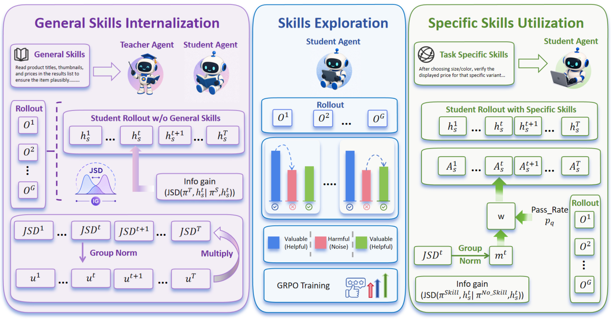
Figure 2 的左、中、右三部分对应训练时序而非三个并行模型。左侧以同一基础模型构造有通用技能上下文的教师和无通用技能的学生，用 JSD 衡量并压缩分布差异；中间完全依靠 GRPO rollout 的环境结果形成自主能力；右侧在学生已访问的同一状态上比较有、无任务特定技能的两个分布，将差异转成优势权重。图中两处 JSD 的角色不同：早期它是直接监督损失，后期它只是信用调制信号，这一点决定了方法不是简单把蒸馏项从头加到尾。早期最难的情形是同一任务的 (G) 次 rollout 全部失败，此时 GRPO 的组归一化优势为
符号解释：(q) 表示任务组，(i) 表示该组中的轨迹，(R_{q,i}) 是结果奖励，(\bar R_q) 与 (\sigma_q) 是组内均值和标准差。全败时奖励没有对比度，单靠结果无法告诉策略哪个动作应被修正。AUSO 只在这种 (p_q=0) 的无信号任务组上启用教师监督，避免对已有成败差异的任务重复施加蒸馏。
给定状态历史 (h_t)，教师分布 (\pi_T(\cdot\mid h_t,S^G)) 读取通用技能，学生分布 (\pi_S(\cdot\mid h_t)) 不读取技能；教师侧停止梯度。作者先在 top-(k) token 上计算 JSD，再对构成环境动作的 token 跨度 (\mathcal A_t) 求平均：
符号解释：(D^{T\rightarrow S}_{t}) 是第 (t) 个环境动作的教师—学生差异，(|\mathcal A_t|) 是该动作包含的生成 token 数。求平均可避免长动作因 token 更多天然得到更大监督。随后，差异先在任务组内标准化，再经 (\tanh)、去均值和最大绝对值归一化得到 (\hat u_t\in[-1,1])，最终权重为
符号解释：(\beta_{\mathrm{int}}) 控制内部化动作重加权幅度。差异大只会在一个有界区间内提高修正力度，不会让单个高 JSD 动作吞没整个梯度。加权蒸馏损失为 (L_{\mathrm{JSD}}=N^{-1}\sum_t u_tD^{T\rightarrow S}_{t})，且只通过学生参数更新。教师监督还采用“短暂升温、随后平滑衰减”的时间表：
符号解释：(s) 是当前步，(T) 是总训练步数，(r) 是 ramp-up 长度，(\rho_{\mathrm{int}}) 是分配给内化的训练比例，SmoothStep 使用裁剪后的三次 Hermite 插值。该时间表先避免训练最初立即施加强教师，再在策略具备基础能力后平滑撤出外部监督；于是早期目标写成
这套设计的输入是轨迹结果、通用技能以及同一模型的教师/学生分布，输出仍是一个策略。训练阶段需要额外的教师上下文与分布计算；目标却是把可迁移知识写入参数，使后续策略不再依赖通用技能提示。风险在于“全败才蒸馏”是很强的条件：若任务组偶然出现一次成功，教师项就退出，而成功是否稳定尚未被证明。
2.2 中期：结果驱动的自主探索
完成初始内化后，AUSO 移除教师引导，让每个任务继续采样多条在线轨迹并用组归一化结果优势更新。这个阶段不增加新技能模块，却承担“能力固化”作用：如果直接从教师内化切到特定技能调用，策略可能把提示依赖误当成自身能力。其目标直接使用
符号解释：(L_{\mathrm{mid}}) 是中期目标，此时没有 JSD 辅助项；策略为每个任务采样多条轨迹，用组归一化结果优势更新。这个阶段看似普通，却承担了方法里的“能力固化”作用：如果从教师内化直接切换到任务技能调用，策略可能把技能依赖误当成自身能力；中间一段纯环境优化迫使模型在没有教师纠偏时形成自主问题求解路径。
中期与推理时的差别也最小：没有额外教师模型、没有技能/无技能双分布对照，计算开销接近标准 GRPO。论文采用的默认时长比例是内化:探索:调用 (=2:5:3)，也就是说一半训练预算留给普通结果驱动探索。这个安排体现了作者的判断：技能信号负责把策略推入更好的学习区间和后期做细粒度调节，但不应替代环境交互本身。
2.3 后期：行为级技能调用与统一目标
后期不再问“学生该模仿教师吗”，而问“任务特定技能在当前动作上改变了策略多少”。对学生真实访问的同一状态 (h_t)，模型分别计算带技能与不带技能上下文的动作分布；这样不增加环境 rollout，也避免比较两条不同轨迹造成状态错位，但仍需要额外模型前向：
符号解释：(I_t) 是技能敏感度。因为两次计算共享同一已访问状态，所以无需新增环境 rollout，也避免比较两条不同轨迹造成状态错位；但它仍需要额外前向计算。原始 (I_t) 在任务间尺度不同，作者在任务组内标准化并裁剪到 ([-3,3])，再经 (\tanh) 得到 (m_t\in[-1,1])，表示该动作相对同组平均水平更受还是更少受技能影响。只有技能影响还不够，必须判断当前组的成功/失败对比是否可靠，因此 AUSO 使用 Bernoulli 方差形状的全局门：
符号解释：(p_q) 是任务组经验成功率，(K) 是缩放常数，(\beta(s)) 随后期训练平滑增加，(w_t) 是最终动作权重。当 (p_q=0) 或 (1) 时，组内缺少成功—失败对照，门值回到零；当两类轨迹并存时，信用分配更可靠。附录从成功组和失败组信息均值差的估计方差出发，说明其精度与 (p_q(1-p_q)) 成正比，但该推导依赖近似同方差假设，因此应理解为设计动机而非严格最优性证明。新的行为级优势为
符号解释：(A^{\mathrm{GRPO}}_q) 仍给出整条轨迹的方向，(w_t>0) 只重新分配同轨迹内不同动作的更新强度。成功轨迹中，高技能敏感动作获得更强正向更新；失败轨迹中，同类动作被更强抑制；低敏感动作接近原始 GRPO。由于 (w_t) 被约束为正数，方法不会把正优势翻成负优势，也不会在原优势为零时凭空制造奖励。JSD 不是技能收益的因果估计：它只定位“技能在哪里改变了决策”，改变究竟好坏仍由轨迹奖励决定。后期损失和统一生命周期目标可概括为
符号解释：第一式说明后期实际优化的仍是带技能上下文策略；第二式把逐渐衰减的内化监督和逐渐增强的调用调制放在同一 GRPO 主干上。若 (\beta(s)=0)、(m_t=0) 或 (p_q\in{0,1})，调用分支退化为标准 GRPO；若 (\lambda_{\mathrm{JSD}}=0)，教师修正消失。统一性因此来自信号、优化与主干三层：同一个反事实 JSD 算子在早期被直接最小化、后期被用于调制优势，二者关闭时都平滑回到 GRPO。选择 JSD 而不是单向 KL 还有三点理由：在二元、均匀的技能上下文先验下，两个分布的 JSD 等于“技能上下文与当前 token 动作”的条件互信息，并满足
符号解释：(P_{t,\ell}) 与 (Q_{t,\ell}) 分别是带技能和无技能的 token 分布，(C) 是二元上下文变量。JSD 对称、有界，避免单向 KL 的参考方向任意性和极端概率处无界。实现上不构造完整词表分布，而取两个分布 top-(k) token 的并集，再把剩余概率汇成 tail 类，最后在动作 token 上平均。这个近似降低内存与计算，但 top-(k) 及 tail 聚合会损失长尾差异，也构成复现时需要检查的近似误差。
3. 实验结果
3.1 任务、口径与复现条件
论文在三类长链路 Agent 环境上评估。ALFWorld 是文本化具身家庭任务，ID 类型为 Pick & Place、Clean & Place、Cool & Place，OOD 类型为 Examine in Light、Heat & Place、Pick Two & Place，交互上限 30 步。WebShop 要求在模拟电商网站搜索、比较属性并购买符合指令的商品；作者把 Apparel、Electronics、Footwear、Other 作为 ID，把 Accessories、Beauty & Health、Home Decor 作为 OOD，得到 3,320 个 ID 训练目标、454 个 ID 评测目标和 207 个 OOD 评测目标，交互上限 15 步。SearchQA 用 NQ 与 HotpotQA 训练，评测覆盖 NQ、TriviaQA、PopQA、HotpotQA、2WikiMultiHopQA、MuSiQue、Bamboogle；每回合最多四次搜索，每次返回前三段。
统一骨干为 Qwen2.5-7B-Instruct，GRPO 每个任务采样 (G=8) 条轨迹，三个环境都训练 150 个优化步，学习率 (10^{-6})，每次更新一个 policy epoch。ALFWorld、WebShop、SearchQA 的任务 batch size 分别为 16、16、128，技能库在训练期间固定。硬件为 4 张 NVIDIA H200。对照方法覆盖 zero/few-shot、ReAct、Reflexion、ExpeL、Mem0、SimpleMem、RLOO、GRPO、MemRL、EvolveR、SkillRL、Skill0、SLIM、LatentSkill、Skill0.5 等。公开仓库已能访问，README 给出三环境安装、WebShop OOD 切分、SearchQA 检索服务与训练脚本；但“仓库存在”不等于论文数值已被独立复现。
3.2 主结果：交互环境与搜索问答
WebShop 上，AUSO 的 ID/OOD 平均成功率为 49.7/51.2，Skill0.5 为 40.4/40.6，对应绝对提升 9.3/10.6 个点。ALFWorld 上，AUSO 为 94.3/67.9，Skill0.5 为 93.1/58.5，提升 1.2/9.4 个点；最难的 Pick2 OOD 子任务从 33.3 提升到 54.2。两组结果的共同特征是 OOD 增幅大于 ID 增幅，这与“先内化通用技能、后按动作选择性利用特定技能”的动机一致，但仅凭结果表还不能区分收益来自 JSD 信号、课程时序还是具体超参数。
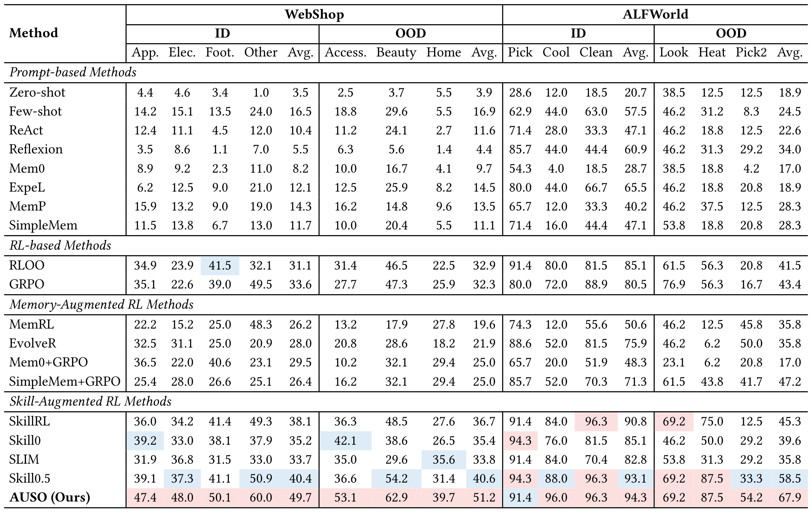
Table 1 的价值在于呈现完整基线谱系和子任务，而不是只看平均数。AUSO 在 WebShop 各 ID/OOD 子类的最后一行大多占优，在 ALFWorld 的 ID 平均仅比 Skill0.5 高 1.2 点，说明已见任务接近饱和；OOD 的 Pick2 则拉开更大差距。表中也存在非全面领先，例如 ALFWorld 的 Pick ID 上 AUSO 91.4，低于多个 94.3 的方法，Look OOD 上与若干方法同为 69.2。因而更稳妥的结论是平均泛化改善，而非每个场景都支配。
SearchQA 的训练曲线提供了不同证据。AUSO 与 Skill0.5 的训练成功率相近，单跳验证都在早期快速上升；差异主要出现在多跳验证，Skill0.5 中期出现明显下探并伴随更大波动，而 AUSO 后期保持相对稳定。若两者训练拟合接近而验证轨迹分开，确实支持“收益不只是更好记住训练任务”的解释，不过图中没有跨随机种子置信区间，不能把单条曲线差异当成统计显著性。
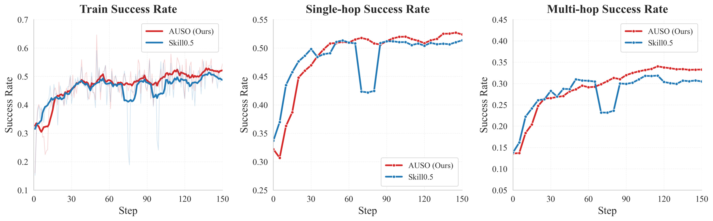
Figure 3 从左到右分别是训练、单跳验证和多跳验证成功率。左图红蓝线末段接近，说明最终训练成功并未出现与验证增益同量级的差距；中图两者都达到较高水平，AUSO 主要减少波动；右图红线在中后期总体高于蓝线，且 Skill0.5 有一次明显跌落。三幅图的对照表明，差异更集中在需要多次搜索和延迟信用的多跳评测，而不是单纯把训练轨迹拟合得更高。这也与表中多跳聚合差值大于单跳聚合差值的计算相呼应。不过，图中没有标出三阶段切换点，无法把某次上升直接归因于内化退场或调用开启。该形态与论文关于多步信用分配的叙事相容，但曲线平滑方式、评测频率与方差会影响视觉判断，因此应与最终数据表共同阅读，不应只凭单次轨迹的红蓝间距下结论。
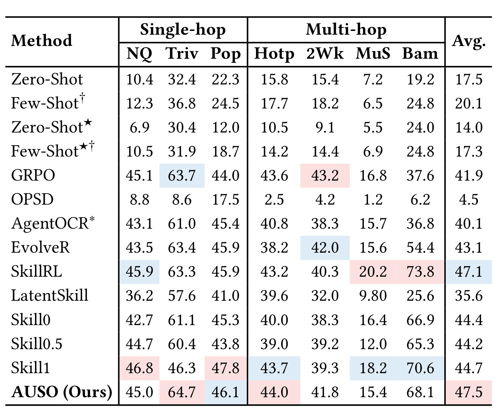
Table 2 显示 AUSO 总平均为 47.5，高于 SkillRL 的 47.1、Skill1 的 44.7、Skill0.5 的 44.2 和 GRPO 的 41.9。它在 TriviaQA 64.7、HotpotQA 44.0 上取得表内最高值，并在 PopQA 46.1 等子集有竞争力；但并非七项全胜：NQ 的 45.0 略低于 GRPO 45.1，MuSiQue 的 15.4 低于 SkillRL 20.2，Bamboogle 的 68.1 低于 SkillRL 73.8。根据表内子项直接计算，AUSO 三个单跳数据集均值约为 51.9，Skill0.5 约为 49.6；四个多跳数据集分别约为 42.3 和 38.9。多跳组的聚合差值更大，与 Figure 3 的验证动态互相印证，但 MuSiQue 和 Bamboogle 也表明这种优势不是每个多跳分布都稳定出现。因此，平均提升成立，却不支持“所有单跳、多跳任务都最佳”的强表述。
3.3 消融：动作信号、课程比例与门控
核心消融把完整 AUSO 的 ALFWorld 94.3/67.9、WebShop 49.7/51.2 与五个变体比较。去掉内化阶段动作级加权后，四项降至 85.1/54.7 与 44.7/47.3；去掉调用阶段动作级加权后为 89.7/49.1 与 47.5/45.9。去掉内化衰减、调用增长或全局门也都下降，其中移除调用增长时 ALFWorld OOD 仅 39.6，移除门时 WebShop OOD 为 43.0。结果说明组件不是单纯增加一个损失就能替代，但不同消融的降幅在环境间差别大，暗示时序和门控需要依任务校准。
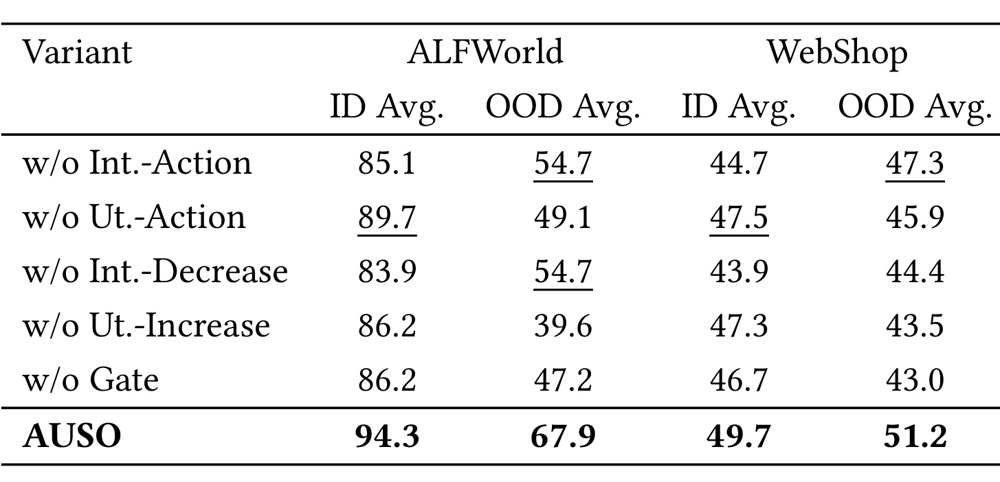
Table 3 同时验证了“行为级”与“渐进式”两条主张。Int.-Action、Ut.-Action 对应两阶段的动作重加权，Int.-Decrease、Ut.-Increase 对应监督退场和调用信号入场，Gate 对应成功/失败对比的可靠性控制。所有移除项都低于完整模型，方向一致；但表中没有只比较 JSD 与其他距离、不同 top-(k) 近似或同等计算预算替代物的消融，因此它更能证明完整实现各部件有用，不能单独证明 JSD 是唯一或最优选择。
三阶段时长也不是任意配置。默认 2:5:3 在 ALFWorld 上达到 94.3/67.9；3:5:2 为 85.1/62.3，平均分配 3.3:3.3:3.3 为 87.4/41.5。尤其 OOD 从 67.9 降到 41.5，说明让教师监督、纯探索与调用调制各占多少训练时间会显著改变泛化。中间探索占一半预算可能为参数吸收通用知识并摆脱教师依赖提供缓冲。
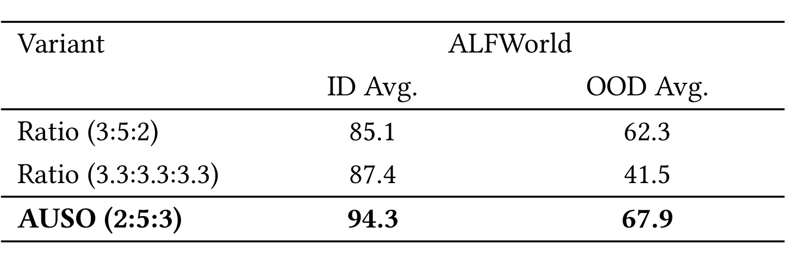
Table 4 只有三个候选比例，能够确认报告设置在这三个点中最好，却不能推出 2:5:3 是连续空间的全局最优。平均分配的 OOD 明显偏低也提醒复现者：阶段切换不是无关实现细节，而是方法的一部分。若更换模型规模、奖励密度或任务 horizon，能力成熟速度会变化，固定比例很可能需要重调。
全局不确定性门的缩放常数 (K) 呈非单调敏感性。ALFWorld 上，(K=1) 的 ID/OOD 为 94.3/49.1，(K=2) 为 87.4/49.1，(K=4) 达到 94.3/67.9，(K=6) 回落到 86.2/56.6，(K=8) 为 86.2/50.9。过小会让行为级信号太弱，过大则可能放大经验成功率和 JSD 的采样噪声。
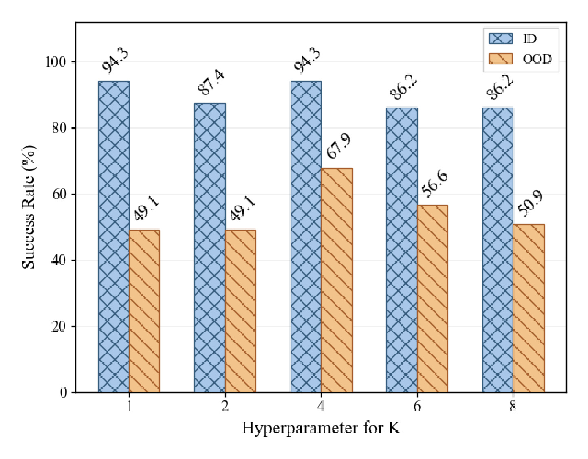
Figure 4 中 ID 柱并非随 (K) 单调变化，OOD 柱在 (K=4) 出现清晰峰值。这个峰值支持“适度调制”而非“越强调技能越好”，也与动作权重必须有界的公式设计一致。从峰值向右看，(K) 从 4 增到 8 时，OOD 由 67.9 回落到 50.9，ID 也由 94.3 降至 86.2；这符合过度放大组内成功率与 JSD 估计噪声的风险。从峰值向左看，(K=1) 与 (K=4) 的 ID 同为 94.3，却在 OOD 上相差 18.8 个点，显示单看训练分布不足以调好该门。另一方面，图中只给单个环境、五个离散点，没有误差条或相邻取值的细粒度搜索；因此 (K=4) 应被视为本文设置下的验证结果，而不是可跨任务直接复用的理论常数。
3.4 训练动态与效率
附录在相同 150 步预算下延长 Skill0.5 训练，排除“基线只是少训练”的简单解释。ALFWorld 和 WebShop 上，AUSO 的训练曲线不一定始终大幅领先，但 ID/OOD 验证通常在中后期维持更高水平；Skill0.5 若继续训练会出现平台或回落，OOD 差距尤其明显。该证据与主表互补：主表说明最终分数，训练曲线说明差距是在何时形成以及是否随训练持续。
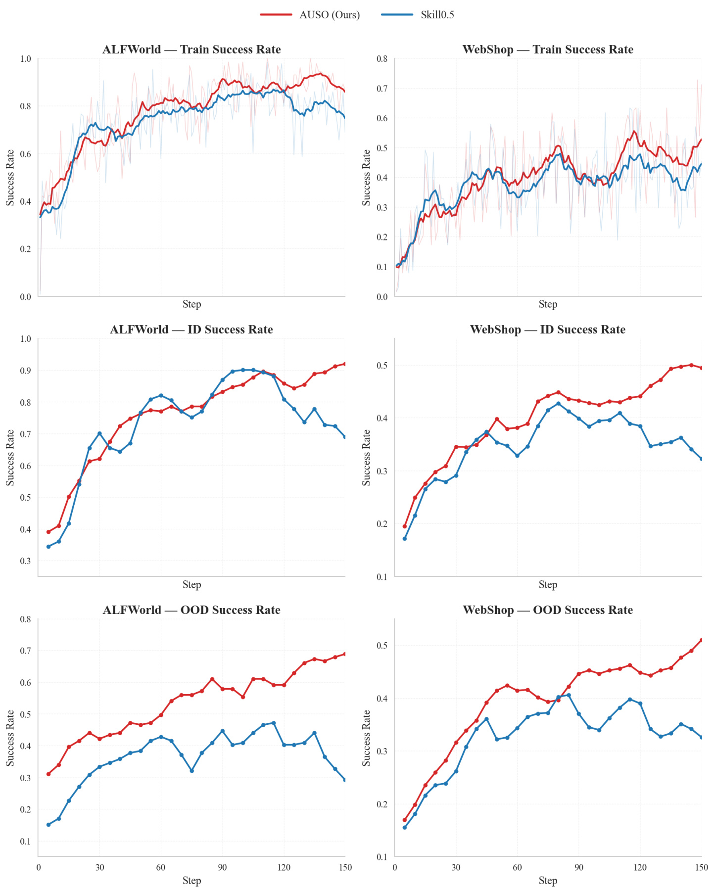
Figure 5 是一个原论文六子图对象，上两幅比较训练成功率，中两幅比较 ID，下两幅比较 OOD。ALFWorld 的后期蓝线回落较明显，WebShop 的 OOD 红线总体保持更高；AUSO 的优势因此不是靠牺牲 ID 换取 OOD。仍需谨慎的是，单次训练曲线可能受任务采样和评测集规模影响，论文没有在图中呈现多次运行的方差带。
与标准 GRPO 的对比进一步关注学习效率。AUSO 在 ALFWorld 的训练成功率与平均奖励更早上升并在大部分训练期保持更高；策略熵总体更低，回合长度也逐渐更短。作者据此认为技能信息让策略更快形成确定、目标导向的动作，而不是长期停留在高不确定性探索。较低熵本身不必然更好，但当它与更高成功率、更高奖励和更短轨迹同时出现时，才构成更完整的效率证据。
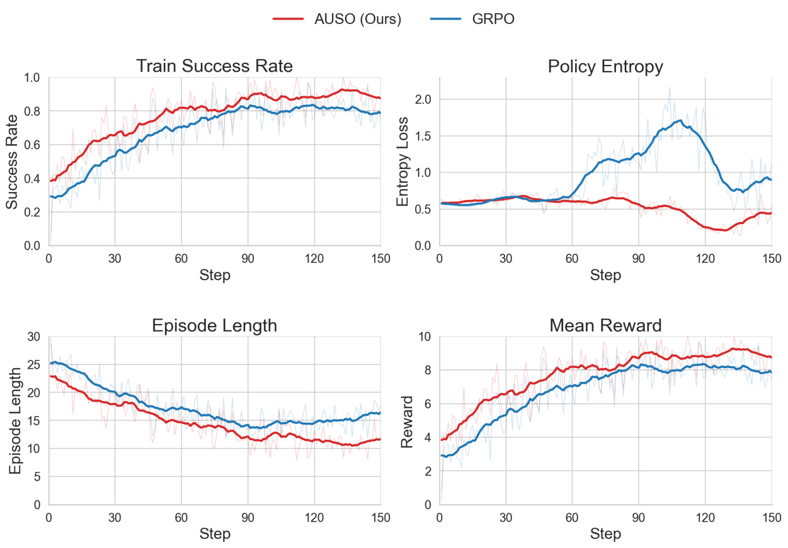
Figure 6 的四个面板必须联合解读：红线成功率和奖励高于蓝线，同时回合长度更短，说明减少的步骤不是提前失败造成；策略熵下降则表明分布更集中。中后期蓝色 GRPO 熵先明显升高再回落，红色 AUSO 更早收敛在较低水平；与此同时，红色回合长度继续降低，没有用更长轨迹换取成功率。这种四指标同向改善比单独一个成功率更能排除假象，也与 Table 5 中减少冗余搜索与重复导航的个案一致。但图内没有阶段分界线，不能仅凭趋势将熵下降归因于后期调用门。此外，论文以训练过程指标描述“sample-efficient”，没有给环境交互总量、额外两次分布前向的 FLOPs、墙钟时间或吞吐。AUSO 可能节省环境步骤，却增加模型计算，系统层面的效率仍未闭环。
3.5 行为案例与公开代码
SearchQA 案例中，两种方法第一次搜索都找到“被 Virgil Scribner 家庭收养于 Manchester, Maine 附近”的充分证据。AUSO 第二步直接回答 Manchester 并终止；Skill0.5 继续两次冗余搜索，最后输出 Manchester, Maine，在 exact-match 规则下因过度指定而失败。差异不在检索召回，而在识别证据已充分、控制答案粒度和及时停止。ALFWorld OOD 案例中，AUSO 用“到 countertop—拿 spraybottle—到 garbagecan—放入”四步完成目标；Skill0.5 在 25 步里重复检查地点，最终耗尽预算。
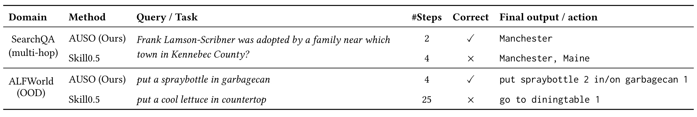
Table 5 把两个案例压缩为任务、步数、正确性和最终输出。它直观展示动作级优化可能改善“什么时候停止”和“下一步是否真正推进目标”，与 JSD 重分配动作梯度的动机一致。但这里只是作者选择的代表性案例，不能据此估计此类失败在测试集中的占比；更有说服力的后续实验应统计冗余检索次数、无效重复动作、答案过度指定率和每次成功任务的平均交互步数。
代码仓库的公开状态对复现是加分项：README 给出 Python 3.12、vLLM 与 FlashAttention 版本，ALFWorld/WebShop/SearchQA 环境设置，WebShop OOD 数据切分、SearchQA 的 E5/FAISS 检索服务、三条训练入口，并明确 Qwen2.5-7B-Instruct 与 4 张 H200。SearchQA 还依赖较大的 Wikipedia 索引与检索服务，WebShop 需要环境数据，实际复现成本不低。当前只能确认入口与说明可访问，尚不能把论文表格视为已由第三方复验。
4. 总结
AUSO 最值得保留的思想不是“再加一个 JSD 损失”，而是把技能视为随策略成熟而变化的资源：早期用带通用技能的教师补足全失败任务的学习信号，中期让普通 GRPO 建立自主能力，后期在同一状态上比较有/无任务技能分布，把技能敏感度与轨迹结果结合，重新分配动作信用。这样既不靠任务级硬阈值切换每个样本的目标，也不让动作级信息自行决定奖励方向。三环境结果、组件消融、时长比例、门控敏感性与代表案例共同支持这一机制在本文设置下有效，尤其 OOD 平均提升较明显。
对推荐与搜索系统的迁移价值也很具体。一个推荐 Agent 可能连续执行查询改写、召回源选择、过滤、重排、解释和停止；外部“技能”可以是业务规则、用户长期偏好、工具使用手册或领域策略。AUSO 提醒我们不要把整条会话的转化或满意度均匀归因给所有步骤，而应比较技能上下文是否真正改变某个动作分布，再用最终反馈决定这种改变该增强还是抑制。实际线上还需把曝光偏差、延迟、探索风险和多目标奖励纳入门控，不能直接照搬成功率二元门。
局限至少包括以下六点：
- JSD 衡量技能影响而非技能收益，轨迹奖励只能提供相关方向，无法证明某个动作的改善由该技能因果导致。
- 实验局限在 ALFWorld、WebShop、SearchQA 和 Qwen2.5-7B-Instruct；模型规模、真实工具链、开放网页噪声与长时间在线学习的外推未验证。
- OOD 评测任务不进入参数训练，但评测时可使用对应 OOD 特定技能库，因此这里的泛化不是“对未知域且无任何域知识”的纯零样本泛化。
- 结果表和训练曲线未系统报告多随机种子方差、置信区间或显著性检验；部分子数据集并非最好，平均提升不能替代稳定性证明。
- 同一状态计算技能/无技能分布会增加模型前向开销，top-(k) 并集与 tail 聚合只是近似；论文没有给训练吞吐、显存、总 FLOPs 与墙钟时间。
- (2:5:3) 阶段比例和 (K=4) 在消融中高度敏感，换环境、奖励密度、rollout 组大小或模型能力后都可能需要重新搜索；固定技能库也没有覆盖检索错误和技能持续演化。
后续跟进可以优先做四件事：
- 依据公开仓库复现 ALFWorld/WebShop 主表与五个消融，至少跑三到五个随机种子，同时记录环境步数、GPU 小时、吞吐和方差。
- 增加因果对照：随机替换、遮蔽或扰动技能，比较 JSD、动作改变量与实际回报增益的校准关系，并与对称 KL、总变差、logit margin 等信号做等预算比较。
- 把技能库变成有噪声、动态更新和检索不确定的系统，检查 AUSO 是否会把错误技能的强影响误当成应强化信号，以及门控能否及时抑制。
- 在推荐/搜索 Agent 上构造“查询改写—召回—重排—停止”的长链评测，除最终转化外同时报告无效调用、重复检索、延迟、用户覆盖与安全约束，验证行为级信用是否带来真正线上可用的收益。
总体而言，AUSO 给出了一条结构清楚、代码入口公开、实验覆盖较完整的技能学习路线；最可信的结论是“在本文三类环境与训练配置下，渐进式行为级技能优化改善了平均成功率和 OOD 表现”。至于 JSD 是否为最佳信号、额外计算是否划算、以及 OOD 技能库条件下的收益能否迁移到真实推荐与工具 Agent，仍需要独立复现和更严格的系统评测。